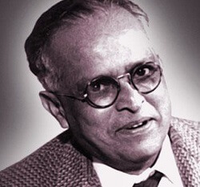

R. K. Narayan
Rasipuram Krishnaswami Iyer Narayanaswami (10 October 1906 – 13 May 2001), better known as R. K. Narayan, was an Indian writer and novelist known for his work set in the fictional South Indian town of Malgudi. He was a leading author of early Indian literature in English along with Mulk Raj Anand and Raja Rao. Narayan's mentor and friend Graham Greene was instrumental in getting publishers for Narayan's first four books including the semi-autobiographical trilogy of Swami and Friends, The Bachelor of Arts and The English Teacher. The fictional town of Malgudi was first introduced in Swami and Friends. The Financial Expert was hailed as one of the most original works of 1951 and Sahitya Academy Award winner The Guide was adapted for the film (winning a Filmfare Award for Best Film) and for Broadway.
Narayan highlights the social context and everyday life of his characters. He has been compared to William Faulkner who created a similar fictional town and likewise explored with humor and compassion the energy of ordinary life. Narayan's short stories have been compared with those of Guy de Maupassant because of his ability to compress a narrative.
In a career that spanned over sixty years Narayan received many awards and honours including the AC Benson Medal from the Royal Society of Literature, the Padma Vibhushan and the Padma Bhushan, India's second and third highest civilian awards,[2] and in 1994 the Sahitya Akademi Fellowship, the highest honor of India's National Academy of Letters.[3] He was also nominated to the Rajya Sabha, the upper house of the Indian Parliament.
Narayan’s Themes and Characters
Narayan's stories belong to the native Indian soil and are reminiscent of its culture. They mainly depict the Indian life and clearly express his view of the world and those who live in it, simple but a fascinating plot, lively characterization, strict economy of narration and subtle simplicity of language are some of the most outstanding features of these stories.
The themes of Narayan’s stories and novels seem to be of perennial interest especially to a sensitive mind interested in human beings. The themes of Narayan are all dependently interrelated and inter-connected. One of them is man’s susceptibility to self-deception which is the most recurrent providing excellent field for Narayan’s comedy. The study of the family and various family relationships, the renunciation, generational disaffiliation, conflict between tradition and modernity, the East-West encounter, education, etc. are his other themes. Through his themes Narayan reinforced the concerns and motifs of his writing in his long career like exile and return, education (in the widest sense of the term), woman and her status in the society, myths and the ancient Indian past, tradition and modernity, Malgudi and its culture, appearance and reality, the family and so on.
Philosophy
R. K. Narayan may not be a philosopher, but his subject matter related to the basic philosophy of Hinduism, i.e. the stories, myths, legends and incidents from the Vedas, the Puranas, the Upanishads, the Ramayana, the Mahabharata and the Bhagawad Gita. One can find Indian culture and tradition, ideologies and views of Indian philosophy and thought in Narayan’s writings.
Narayan’s the themes in his stories and novels find a vivid life from historical observation of common place incidents and humdrum life. It presents the basic theme of Narayan’s stories and novels as the place of man in this universe and its predicament and Narayan as the first and foremost an artist in his presentation of Indian life, culture and tradition. It highlights Narayan’s stories as quite attractive. He covers the wide gamut of human experience from the innocent pranks of children to serious communal riots, misery of common man to filial relationship, superstitions and orthodox social traditions to the supernatural elements. He is actually a sensible novelist and short story writer who deeply loves his country and his countrymen. His criticism can never be violent, even when it is bitter and far- reaching. What one gets in his novels perfectly illustrates the gentleness and humanity of his country.